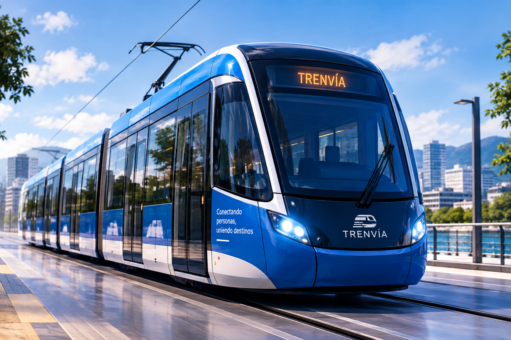

Presentación del proyecto

Esta investigación analiza las condiciones urbanas, físico-espaciales y de movilidad del corredor urbano del río Pasto. Su finalidad es establecer criterios que permitan estudiar la posible implementación de un sistema ligero de transporte público tipo tranvía como alternativa de movilidad para la ciudad.
El tranvía no se presenta como una solución definitiva. Su pertinencia depende de las características del territorio, la protección del río, el espacio disponible, la demanda potencial y su posible articulación con el Sistema Estratégico de Transporte Público de Pasto.
Datos académicos
- Autor: Miguelangel Samuel Realpe Juajinoy
- Asesor: Jorge Armando Arturo Calvache
- Programa: Arquitectura
- Institución: Universidad CESMAG
- Ciudad: San Juan de Pasto, Nariño
Problema de investigación
El corredor del río Pasto reúne vías, áreas residenciales, comercios, equipamientos, espacio público y dinámicas de transporte. Sin embargo, presenta diferencias en los perfiles viales, discontinuidades peatonales, ocupaciones próximas a la ronda hídrica y sectores con poca conexión entre la ciudad y el río.
Pregunta de investigación
¿Qué condiciones urbanas, físico-espaciales y de movilidad del corredor del río Pasto inciden en la posible implementación de un sistema ligero tipo tranvía?
Objetivos
Objetivo general
Analizar las condiciones urbanas, físico-espaciales y de movilidad del corredor urbano del río Pasto, para establecer criterios que orienten la posible implementación de un tranvía.
Objetivos específicos
- Diagnosticar las condiciones urbanas, físico-espaciales y de movilidad del corredor urbano del río Pasto.
- Analizar referentes de sistemas ligeros de transporte e intermodalidad aplicables al corredor.
- Evaluar las condiciones del corredor frente a escenarios territoriales y de movilidad.
Ámbito de estudio
- Contexto general: ciudad de San Juan de Pasto y Parque Río Pasto.
- Corredor de análisis: tramo longitudinal aproximado de 6,37 km.
- Área de influencia metodológica: franja de 500 m.
- Sector de profundización: entorno de La Milagrosa y Avenida Santander.
Metodología
El estudio utiliza un enfoque cualitativo bajo el paradigma crítico-social. La información territorial y de movilidad se obtiene mediante:
- Observación no participante y diario de campo.
- Encuestas de percepción ciudadana.
- Recopilación y revisión documental.
- Análisis cartográfico en diferentes escalas.
Variables del diagnóstico
| Variable | Aspecto analizado | Relación con el tranvía |
|---|---|---|
| Población | Concentraciones dentro del área de influencia | Demanda potencial |
| Usos y equipamientos | Actividades generadoras y atractoras | Generación de viajes |
| Espacio público | Continuidades y discontinuidades | Accesibilidad al sistema |
| Perfil vial | Secciones variables | Condicionante físico |
| Ronda hídrica | Sectores ocupados o restringidos | Condicionante ambiental |
| SETP | Rutas y puntos de conexión existentes | Potencial de intermodalidad |
| Movilidad peatonal y ciclista | Flujos y conexiones existentes | Integración modal |
| Percepción ciudadana | Valoración del corredor y del sistema | Condición social |
Condiciones favorables
- Continuidad longitudinal del corredor.
- Relación con sectores residenciales, áreas centrales y equipamientos.
- Presencia de actividades generadoras de viajes.
- Posibilidad de articulación con el transporte público existente.
Restricciones y condicionantes
- Ocupación y protección de la ronda hídrica.
- Proximidad de algunas edificaciones al cauce.
- Variación de los perfiles viales.
- Discontinuidades peatonales y conflictos entre modos de transporte.
- Necesidad de proteger el río y su recuperación ambiental.
Conclusión general
El corredor del río Pasto presenta oportunidades para estudiar un sistema ligero de transporte por su continuidad, localización y relación con diferentes actividades urbanas. No obstante, su posible implementación debe evaluarse por sectores, debido a las restricciones ambientales, las diferencias del espacio vial y las condiciones actuales de movilidad.
La investigación busca definir criterios para una evaluación posterior; por lo tanto, no afirma que el tranvía sea viable ni establece todavía un trazado definitivo.